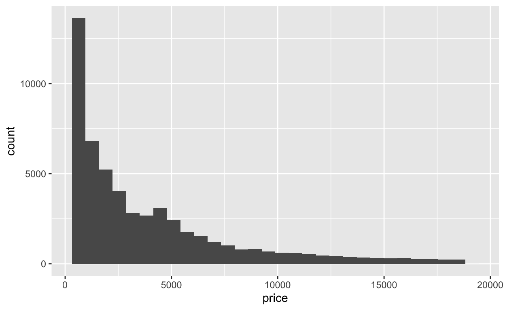
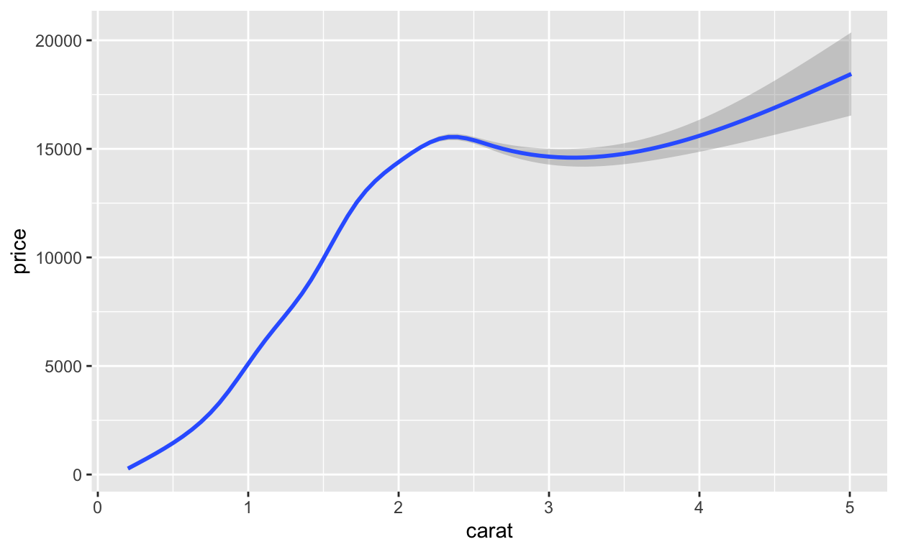
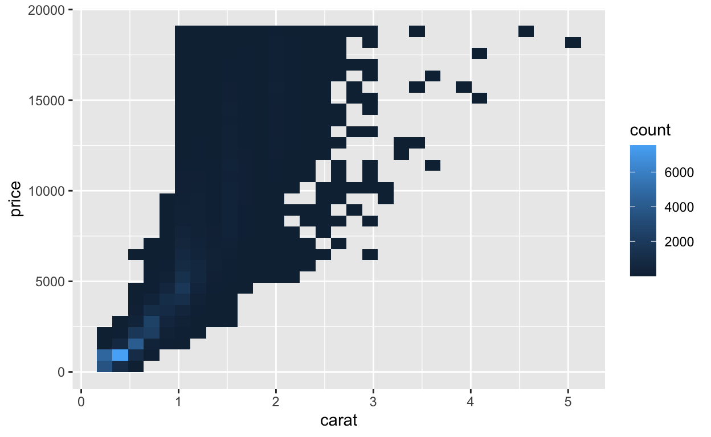
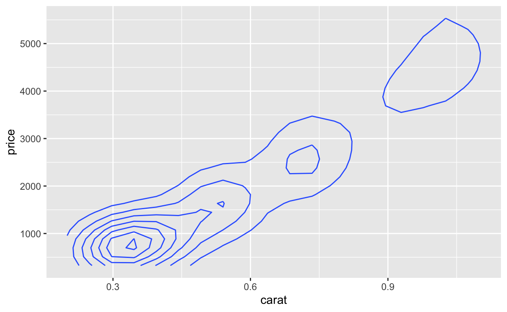
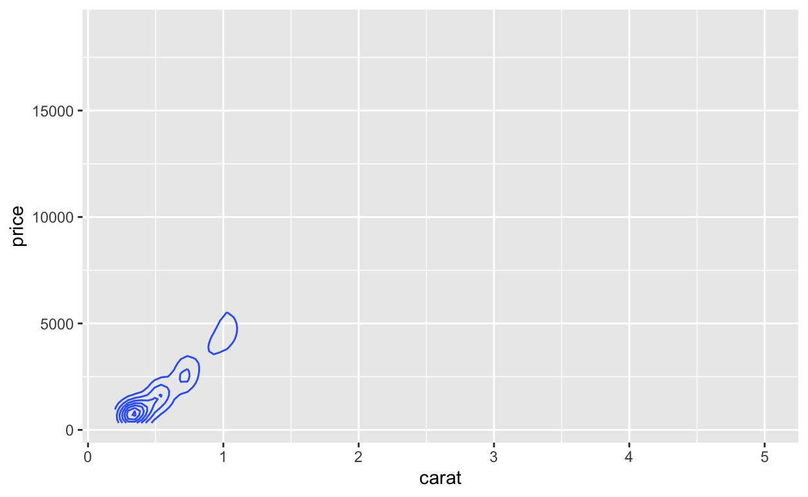

Bienvenue
La visualisation de données permet de rendre les données accessibles à votre système visuel, qui peut traiter rapidement de grandes quantités d’informations. Cependant, deux caractéristiques des données peuvent court-circuiter ce système. Les données ne peuvent pas être facilement visualisées si :
Les points de données ont été arrondis et ont ainsi des valeurs égales.
Les données contiennent tellement de points qu’elles s’occultent les unes les autres.
Ces deux caractéristiques créent un phénomène de chevauchement, c’est-à-dire la condition où plusieurs geoms dans le graphique sont superposés et se cachent les uns les autres. Ce module vous montrera plusieurs stratégies pour faire face au problème de chevauchement, en introduisant de nouvelles fonctions geoms en cours de route.
Le module est adapté du livre R for Data Science de Hadley Wickham et Garrett Grolemund, publié par O’Reilly Media, Inc. 2016, ISBN : 9781491910399. Vous pouvez acheter le livre ici : shop.oreilly.com.
Le module utilise les packages {ggplot2} et {hexbin}, qui ont été préchargés.
Chevauchement
Qu’est-ce que le phénomène de chevauchement ?
Vous avez vu ce graphique plusieurs fois dans les modules précédents, mais avez-vous remarqué qu’il n’affiche que 126 points ? C’est curieux, car le graphique représente un jeu de données qui contient 234 points.

Les points manquants sont cachés derrière d’autres points, un phénomène connu sous le nom de chevauchement. Le chevauchement est problématique car il donne une image incomplète de l’ensemble des données. Vous ne pouvez pas déterminer où se trouve la masse des points, ce qui rend difficile la détection de relations dans les données.
Causes du chevauchement
Le chevauchement se produit généralement pour deux raisons différentes :
Les points de données ont été arrondis à une “grille” de valeurs communes, comme dans le graphique ci-dessus
Le jeu de données est si vaste qu’il ne peut être tracé sans que les points ne se chevauchent
La manière dont vous traitez le problème de chevauchement dépend de la cause.
Arrondis
Chevauchement dû aux arrondis
Si votre chevauchement est dû à l’utilisation de valeurs arrondies, vous pouvez obtenir une meilleure image des données en rendant chaque point semi-transparent. Par exemple, vous pourriez fixer le paramètre esthétique alpha du graphique ci-dessous à une valeur inférieure à un, ce qui rendra les points transparents.
Essayez cela. Fixez le paramètre alpha à 0.25, ce qui rendra chaque point opaque à 25 % (c’est-à-dire que quatre points superposés créeront un point noir plein).
ggplot(data = mpg) +
aes(x = displ, y = hwy) +
geom_point()ggplot(data = mpg) +
aes(x = displ, y = hwy) +
geom_point(alpha = 0.25)"Bien ! Vous pouvez maintenant identifier les valeurs qui contiennent le plus d'observations. Les endroits les plus sombres contiennent plusieurs points empilés les uns sur les autres."Ajuster la position
Une deuxième stratégie pour traiter les problèmes liés aux arrondis consiste à modifier légèrement la position de chaque point. position = "jitter" ajoute une petite quantité de bruit aléatoire à l’emplacement de chaque point. Comme le bruit est aléatoire, il est peu probable que les versions bruitées de deux points qui étaient auparavant au même endroit pour des raisons d’arrondis se retrouvent encore au même endroit.
Le résultat est un graphique bruité qui affiche davantage de données. L’ajout de bruit dans les graphiques présente à la fois des limites et des avantages. Vous ne pouvez pas utiliser ce type de graphiques “bruités” pour voir les valeurs locales des points, mais vous pouvez l’utiliser pour percevoir la relation globale entre les variables, ce qui est difficile à faire en présence d’un phénomène de chevauchement.

Révision - jitter
Vous avez appris par le passé l’existence d’un geom qui affiche l’équivalent de geom_point() avec un ajustement position = "jitter".
Réécrivez le code ci-dessous pour utiliser ce geom. Obtenez-vous des résultats similaires ?
ggplot(data = mpg) +
aes(x = displ, y = hwy) +
geom_point(position = "jitter")ggplot(data = mpg) +
aes(x = displ, y = hwy) +
geom_jitter()"Bon travail ! Voyons maintenant comment gérer le chevauchement des données en raison de la taille des jeux de données."Larges jeux de donnees
Chevauchement dû à la taille des données
Un jeu de données n’a pas besoin d’être vraiment “Big Data” pour être difficile à visualiser. Le jeu de données diamonds contient moins de 54 000 points, mais il souffre toujours d’un chevauchement lorsque vous essayez de tracer le carat par rapport au prix. Ici, la plupart des points se superposent dans un nuage noir impénétrable.

Stratégies pour les données volumineuses
Les paramètres alpha et jitter sont moins utiles pour les données volumineuses. jitter ne sépare pas les points, et une masse de points transparents peut toujours paraître noire.
Une meilleure façon de traiter le chevauchement dû à des données volumineuses est de visualiser un résumé des données. En fait, nous avons déjà travaillé avec ce jeu de données en utilisant des fonctions géométriques qui résument naturellement les données, comme geom_histogram() et geom_smooth().

Examinons plusieurs autres fonctions geom_ que vous pouvez utiliser pour résumer les relations dans des données de grande taille.
Révision - Boîtes à moustaches avec variables continues
Les boîtes à moustaches résument efficacement les données, ce qui en fait un outil pratique pour les grands jeux de données. Dans le module sur les boites à moustache, vous avez appris à utiliser cut_width() et le paramètre esthétique group pour tracer plusieurs boîtes à moustaches pour une variable continue.
Modifiez le code ci-dessous pour couper l’axe des carats en intervalles de largeur 0.2. Puis utilisez le résultat comme paramètre esthétique de groupe de geom_boxplot().
ggplot(data = diamonds) +
aes(x = carat, y = price) +
geom_boxplot()ggplot(data = diamonds) +
aes(x = carat, y = price, group = cut_width(carat, width = 0.2)) +
geom_boxplot()"Bon travail ! Les médianes des boîtes à moustaches donnent une description un peu plus précise de la relation entre le carat et le prix, ce que les points individuels ne permettent pas de faire."geom_bin2d()
geom_bin2d() fournit une nouvelle façon de résumer les relations continues bidimensionnelles. On peut considérer que bin2d fonctionne comme un histogramme tridimensionnel. Il divise le champ cartésien en petits blocs rectangulaires, comme un damier. Il compte ensuite le nombre de points qui tombent dans chaque case, et fait correspondre le compte à la couleur. Les cases qui ne contiennent pas de points sont laissées vides.

En étudiant les résultats, on peut voir que la masse des points tombe dans le coin inférieur gauche du graphique.
Exercice - binwidths
Comme les histogrammes, bin2d utilise les arguments bins et binwidth. Chacun doit être défini sur un vecteur de deux nombres : un pour le nombre de classes (ou binwidths) à utiliser sur l’axe x, et un pour le nombre de classes (ou binwidths) à utiliser sur l’axe y.
Utilisez l’un de ces paramètres pour modifier le graphique ci-dessous afin d’utiliser 40 classes sur l’axe des x et 50 sur l’axe des y.
ggplot(data = diamonds) +
aes(x = carat, y = price) +
geom_bin2d()ggplot(data = diamonds) +
aes(x = carat, y = price) +
geom_bin2d(bins = c(40, 50))"Bon travail ! Comme pour les histogrammes, les bin2ds peuvent révéler différentes informations avec différentes largeurs de classes."Exercice - geom_hex()
Nos yeux sont attirés par des lignes droites verticales et horizontales, ce qui fait que nous percevons facilement des “bords” dans un bin2d qui ne sont pas nécessairement là (les bin2d rectangulaires forment naturellement des bords qui couvrent la largeur du graphique).
Une façon d’éviter cela, si vous voulez, est d’utiliser la fonction geom_hex() du package {hexbin}. geom_hex() fonctionne comme geom_bin2d() mais utilise des blocs hexagonaux. Ajustez le graphique ci-dessous pour utiliser geom_hex().
ggplot(data = diamonds) +
aes(x = carat, y = price) +
geom_bin2d()ggplot(data = diamonds) +
aes(x = carat, y = price) +
geom_hex()"Bon travail ! Vous devez obligatoirement avoir le package {hexbin} installé sur votre ordinateur, mais pas nécessairement chargé, pour utiliser geom_hex()."geom_density2d()
geom_density2d() fournit une dernière façon de résumer une relation continue à deux dimensions. Pensez à density2d comme l’analogue bidimensionnel de density. Au lieu de tracer une ligne qui monte et descend sur la dimension y, elle dessine un champ sur les axes de coordonnées qui monte et descend sur la dimension z, c’est la dimension qui pointe directement du graphique vers vous.
Le résultat est similaire à une montagne que vous regardez depuis le dessus. Les endroits les plus élevés de la montagne indiquent où se trouvent le plus grand nombre de points et les endroits les plus bas indiquent où se trouvent le moins de points. Pour visualiser cette montagne, density2d trace des courbes de niveau qui relient les zones de même “hauteur”, tout comme une carte en courbes de niveau dessine l’altitude.
On voit ici la “crête” des points qui se trouvent à des valeurs basses de carat et de prix.

Étendre les limites
Par défaut, density2d zoome sur la région qui contient des lignes de densité. Il se peut que cette région ne soit pas la même que celle couverte par les points de données. Si vous le souhaitez, vous pouvez ré-étendre le graphique à la région couverte par les variables de prix et de carat avec expand_limits().
La fonction expand_limits() agrandit les axes x et y pour qu’ils correspondent à la plage de deux variables quelconques (il n’est pas nécessaire qu’il s’agisse des variables x et y d’origine).

Exercice - density2d
Souvent, les graphiques créés avec density2d sont plus faciles à lire lorsqu’ils sont tracés en plus des données d’origine. Dans la partie ci-dessous, créez un graphique de la taille des carats de diamant en fonction du prix (variables carat et price). Le tracé doit contenir des lignes de densité en 2D superposées au-dessus des points bruts. Rendez les points bruts transparents avec un alpha de 0.1.
ggplot(data = diamonds) +
aes(x = carat, y = price) +
geom_point(alpha = 0.1) +
geom_density2d()"Bon travail ! Tracer des optimums locaux sur des valeurs brutes est classique en Data science."Récapitulatif
Le chevauchement est un phénomène courant dans les graphiques, car les causes du chevauchement sont communes aux jeux de données. En effet, les jeux de données sont souvent :
constitués de valeurs arrondies, ou
trop grands pour être visualisés facilement sans chevauchement
Lorsque le chevauchement résulte d’arrondis, vous pouvez le contourner en manipulant la transparence ou l’emplacement des points.
Pour des jeux de données plus importants, vous pouvez utiliser des fonctions géométriques qui résument les données pour afficher les relations sans chevauchement. C’est une tactique également efficace pour les données vraiment importantes, et elle fonctionne également pour le premier cas de chevauchement dû à des arrondis.
Une dernière tactique consiste à échantillonner vos données afin de créer un échantillon de données suffisamment petit pour être visualisé sans chevauchement.
Vous avez maintenant appris à utiliser une boîte à outils complète pour explorer les données visuellement. Le dernier module de cette section vous montrera comment peaufiner les graphiques que vous créez. Au lieu d’apprendre à visualiser les données, vous apprendrez à ajouter des titres et des légendes, à personnaliser les schémas de couleurs et bien plus encore.